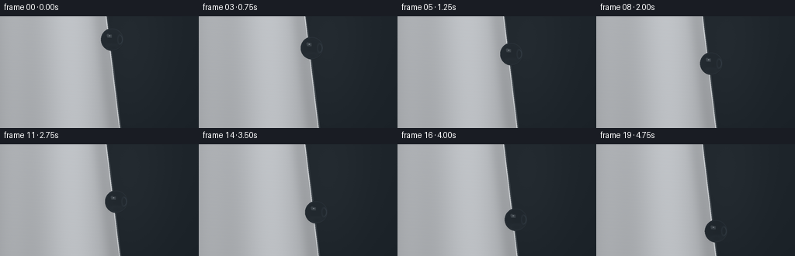
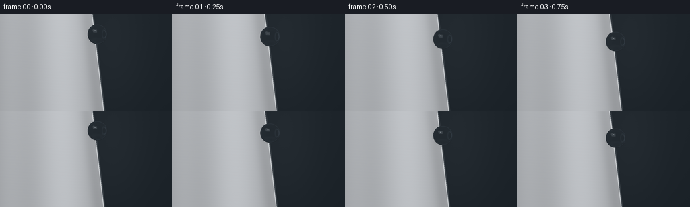

CODING AGENTS AS PIXEL WORLD MODELS
traex/GPT-6.1-Sol · mechanics_0056
点击播放 · 原生 RGB 像素
逐轮保存的候选
回放视频、检查图与代码变化。
每份候选均可单独播放。实际图片检查记录在下方工具轨迹中。
候选 01播放与检查图
点击播放 · 原生 RGB 像素


展开代码变化
--- 上一保存版本
+++ 本次保存版本
@@ -0,0 +1,148 @@
+"""Analytic, supersampled macro rendering of a water bead on an aluminum edge."""
+from pathlib import Path
+import json
+import numpy as np
+from PIL import Image
+import artifact_io
+
+ROOT = Path(__file__).resolve().parent
+SPEC = json.loads((ROOT / 'task_spec.json').read_text())
+W, H = SPEC['width'], SPEC['height']
+SS = 3
+rng = np.random.default_rng(71)
+# All geometry is in image-pixel units; z points towards the camera.
+Y, X = np.mgrid[0:H*SS, 0:W*SS].astype(np.float64)
+X = (X + .5)/SS
+Y = (Y + .5)/SS
+EDGE = 146 + .12*(Y-72)
+
+
+def smoothstep(a, b, x):
+ t = np.clip((x-a)/(b-a), 0, 1)
+ return t*t*(3-2*t)
+
+
+def scenery(x, y):
+ """Continuous backdrop and a smooth, very subtly brushed metal face."""
+ edge = 146 + .12*(y-72)
+ # A quiet, defocused studio background, not a textured wall.
+ illumination = 7*np.exp(-((x-167)/55)**2-((y-42)/120)**2)
+ illumination += 2.2*np.cos((y+20)/100)
+ bg = np.stack([26+illumination, 33+illumination, 39+illumination], axis=-1)
+ # Broad reflections in the aluminum; deliberately no roughness or dents.
+ brightness = 151 + 40*np.exp(-((x-90-.035*y)/48)**2)
+ brightness += 17*np.exp(-((x-14)/26)**2) - 11*np.exp(-((x-edge+10)/9)**2)
+ brightness += 4*(1-y/144)
+ brushing = .42*np.sin(y*9.1+x*.028) + .22*np.sin(y*17.4+x*.1)
+ brightness += brushing
+ metal = np.stack([brightness*.985, brightness*1.002, brightness*1.023], axis=-1)
+ # A tightly radiused, polished cut edge and its narrow dark side face.
+ bevel = np.exp(-((x-edge+.72)/.56)**2)
+ metal = metal*(1-bevel[...,None]*.65) + np.array([240,244,247])*bevel[...,None]*.65
+ side = smoothstep(edge-.05, edge+.18, x)*(1-smoothstep(edge+1.2,edge+1.9,x))
+ result = np.where((x<=edge)[...,None],metal,bg)
+ side_color = np.stack([54+10*np.sin(y/80),61+10*np.sin(y/80),67+10*np.sin(y/80)],-1)
+ result = result*(1-side[...,None])+side_color*side[...,None]
+ return np.clip(result/255,0,1)
+
+
+def environment(d):
+ """A photographic studio light field reflected by the curved water surface."""
+ dx,dy,dz = d[...,0],d[...,1],d[...,2]
+ base = .12 + .12*smoothstep(-.7,.8,dy) + .035*dz
+ rgb = np.stack([base*.92,base,base*1.10],-1)
+ # The large overhead softbox is a slightly feathered rectangular reflection.
+ u = (dx+.43)/.38
+ v = (dy-.55)/.26
+ softbox = (1-smoothstep(.79,1.03,np.abs(u))) * (1-smoothstep(.78,1.03,np.abs(v)))
+ softbox *= smoothstep(.03,.28,dz)
+ rgb += softbox[...,None]*np.array([4.8,4.85,4.9])
+ # Slim cool fill panel on the other side of the studio.
+ strip = np.exp(-((dx-.84)/.065)**6) * np.exp(-((dy+.03)/.67)**6)
+ rgb += strip[...,None]*np.array([1.25,1.4,1.55])
+ # Lower broad reflected silver surface, responsible for the clear bottom rim.
+ bottom = np.exp(-((dy+.78)/.17)**2)*(.25+.75*smoothstep(-.6,.5,dz))
+ rgb += bottom[...,None]*np.array([.5,.54,.59])
+ return rgb
+
+
+def refract(i,n,eta):
+ dot = np.sum(i*n,axis=-1)
+ k = 1-eta*eta*(1-dot*dot)
+ t = eta*i-(eta*dot+np.sqrt(np.maximum(k,0)))[...,None]*n
+ return t
+
+
+static = scenery(X,Y)
+frames = []
+for frame in range(SPEC['frames']):
+ t = frame/(SPEC['frames']-1)
+ cy = 30 + 82*(.82*t+.18*t*t)
+ cx = 146+.12*(cy-72)+3.7
+ radius = 14.7
+ cz = 13.6
+ canvas = static.copy()
+ # Small attachment shadow, visible only on the metal, no liquid streak.
+ dist_shadow = ((X-(cx-4.4))/8.4)**2 + ((Y-(cy+2.7))/10.7)**2
+ shadow = .19*np.exp(-dist_shadow*1.9)*(X<EDGE)
+ canvas *= (1-shadow[...,None])
+ contact = .20*np.exp(-((X-EDGE+1.2)/1.65)**2-((Y-cy)/4.5)**2)*(X<EDGE)
+ canvas *= 1-contact[...,None]
+ caustic = .060*np.exp(-((X-EDGE+2.1)/2.4)**2-((Y-cy-9.8)/2.2)**2)*(X<EDGE)
+ canvas += caustic[...,None]*np.array([.9,.96,1])
+
+ # Only trace the sphere's bounded patch for efficiency.
+ x0 = max(0,int((cx-radius-1)*SS)); x1=min(W*SS,int((cx+radius+1)*SS)+1)
+ y0 = max(0,int((cy-radius-1)*SS)); y1=min(H*SS,int((cy+radius+1)*SS)+1)
+ px=X[y0:y1,x0:x1]; py=Y[y0:y1,x0:x1]
+ nx=(px-cx)/radius
+ ny=(cy-py)/radius
+ r2=nx*nx+ny*ny
+ inside=r2<1
+ nz=np.sqrt(np.maximum(1-r2,0))
+ normal=np.stack([nx,ny,nz],axis=-1)
+ incident=np.zeros_like(normal); incident[...,2]=-1
+ entry=np.stack([px,-py,cz+radius*nz],axis=-1)
+ direction=refract(incident,normal,1/1.333)
+ center=np.array([cx,-cy,cz])
+ # Second intersection with the spherical water-air interface.
+ distance=-2*np.sum((entry-center)*direction,axis=-1)
+ exitpoint=entry+distance[...,None]*direction
+ outnormal=(exitpoint-center)/radius
+ outgoing=refract(direction,-outnormal,1.333)
+ # Refracted rays see the silver sheet or the distant blue-gray backdrop.
+ travel=(0-exitpoint[...,2])/np.minimum(outgoing[...,2],-.00001)
+ hit=exitpoint+travel[...,None]*outgoing
+ hitx,hity=hit[...,0],-hit[...,1]
+ hit_edge=146+.12*(hity-72)
+ metal_hit=(hitx<=hit_edge+1.4)&(travel>0)
+ behind=(-45-exitpoint[...,2])/np.minimum(outgoing[...,2],-.00001)
+ bgpoint=exitpoint+behind[...,None]*outgoing
+ refracted=np.where(metal_hit[...,None],scenery(hitx,hity),scenery(np.maximum(bgpoint[...,0],146+.12*(-bgpoint[...,1]-72)+2.2),-bgpoint[...,1]))
+ # Gentle lens focusing increases the luminance of the refracted aluminum.
+ refracted *= (1.015+.07*(1-nz))[...,None]
+ reflected=incident+2*nz[...,None]*normal
+ reflection=environment(reflected)
+ fresnel=.0204+.9796*(1-nz)**5
+ # Transparent water: nearly zero absorption, with physically clear Fresnel rims.
+ transmission=(1-fresnel)*(1-.0204)
+ water=refracted*transmission[...,None]+reflection*fresnel[...,None]
+ # Local second-interface internal reflection, faint and confined to the rim.
+ rim=np.exp(-((np.sqrt(np.maximum(r2,0))-.94)/.024)**2)
+ water += rim[...,None]*np.array([.030,.038,.045])
+ # A tiny crisp glint within the softbox adds the wet macro appearance.
+ glint=np.exp(-((nx+.245)/.054)**2-((ny-.335)/.027)**2)
+ water+=glint[...,None]*np.array([.58,.58,.57])
+ # Specular filmic rolloff, retaining clean highlight detail.
+ water=np.where(water>.85,.85+.15*(1-np.exp(-(water-.85)/.15)),water)
+ patch=canvas[y0:y1,x0:x1]
+ patch[inside]=water[inside]
+ # Very subtle photographic grain stays fixed to the scene rather than flickering.
+ grain=.0011*np.sin(X*13.19+Y*7.83)*np.sin(Y*22.31-X*3.12)
+ canvas+=grain[...,None]
+ image=Image.fromarray(np.uint8(np.clip(canvas,0,1)*255+.5),'RGB')
+ image=image.resize((W,H),Image.Resampling.LANCZOS)
+ frames.append(np.asarray(image))
+
+artifact_io.save(np.stack(frames),ROOT)
+print(f'Saved {len(frames)} RGB frames at {W}x{H}, {SPEC["fps"]} fps.')
可观测工具轨迹
实际执行的命令与返回图片。
命令 1exit 0
/bin/bash -lc 'ls -la && cat prompt.txt && cat GENERATION_RULES.md && cat task_spec.json'
命令 2exit 0
/bin/bash -lc "cat artifact_io.py && python - <<'PY'
import numpy, PIL
print('numpy',numpy.__version__)
PY"命令 3exit 0
/bin/bash -lc "cat > generate.py <<'PY'
\"\"\"Analytic, supersampled macro rendering of a water bead on an aluminum edge.\"\"\"
from pathlib import Path
import json
import numpy as np
from PIL import Image
import artifact_io
ROOT = Path(__file__).resolve().parent
SPEC = json.loads((ROOT / 'task_spec.json').read_text())
W, H = SPEC['width'], SPEC['height']
SS = 3
rng = np.random.default_rng(71)
# All geometry is in image-pixel units; z points towards the camera.
Y, X = np.mgrid[0:H*SS, 0:W*SS].astype(np.float64)
X = (X + .5)/SS
Y = (Y + .5)/SS
EDGE = 146 + .12*(Y-72)
def smoothstep(a, b, x):
t = np.clip((x-a)/(b-a), 0, 1)
return t*t*(3-2*t)
def scenery(x, y):
\"\"\"Continuous backdrop and a smooth, very subtly brushed metal face.\"\"\"
edge = 146 + .12*(y-72)
# A quiet, defocused studio background, not a textured wall.
illumination = 7*np.exp(-((x-167)/55)**2-((y-42)/120)**2)
illumination += 2.2*np.cos((y+20)/100)
bg = np.stack([26+illumination, 33+illumination, 39+illumination], axis=-1)
# Broad reflections in the aluminum; deliberately no roughness or dents.
brightness = 151 + 40*np.exp(-((x-90-.035*y)/48)**2)
brightness += 17*np.exp(-((x-14)/26)**2) - 11*np.exp(-((x-edge+10)/9)**2)
brightness += 4*(1-y/144)
brushing = .42*np.sin(y*9.1+x*.028) + .22*np.sin(y*17.4+x*.1)
brightness += brushing
metal = np.stack([brightness*.985, brightness*1.002, brightness*1.023], axis=-1)
# A tightly radiused, polished cut edge and its narrow dark side face.
bevel = np.exp(-((x-edge+.72)/.56)**2)
metal = metal*(1-bevel[...,None]*.65) + np.array([240,244,247])*bevel[...,None]*.65
side = smoothstep(edge-.05, edge+.18, x)*(1-smoothstep(edge+1.2,edge+1.9,x))
result = np.where((x<=edge)[...,None],metal,bg)
side_color = np.stack([54+10*np.sin(y/80),61+10*np.sin(y/80),67+10*np.sin(y/80)],-1)
result = result*(1-side[...,None])+side_color*side[...,None]
return np.clip(result/255,0,1)
def environment(d):
\"\"\"A photographic studio light field reflected by the curved water surface.\"\"\"
dx,dy,dz = d[...,0],d[...,1],d[...,2]
base = .12 + .12*smoothstep(-.7,.8,dy) + .035*dz
rgb = np.stack([base*.92,base,base*1.10],-1)
# The large overhead softbox is a slightly feathered rectangular reflection.
u = (dx+.43)/.38
v = (dy-.55)/.26
softbox = (1-smoothstep(.79,1.03,np.abs(u))) * (1-smoothstep(.78,1.03,np.abs(v)))
softbox *= smoothstep(.03,.28,dz)
rgb += softbox[...,None]*np.array([4.8,4.85,4.9])
# Slim cool fill panel on the other side of the studio.
strip = np.exp(-((dx-.84)/.065)**6) * np.exp(-((dy+.03)/.67)**6)
rgb += strip[...,None]*np.array([1.25,1.4,1.55])
# Lower broad reflected silver surface, responsible for the clear bottom rim.
bottom = np.exp(-((dy+.78)/.17)**2)*(.25+.75*smoothstep(-.6,.5,dz))
rgb += bottom[...,None]*np.array([.5,.54,.59])
return rgb
def refract(i,n,eta):
dot = np.sum(i*n,axis=-1)
k = 1-eta*eta*(1-dot*dot)
t = eta*i-(eta*dot+np.sqrt(np.maximum(k,0)))[...,None]*n
return t
static = scenery(X,Y)
frames = []
for frame in range(SPEC['frames']):
t = frame/(SPEC['frames']-1)
cy = 30 + 82*(.82*t+.18*t*t)
cx = 146+.12*(cy-72)+3.7
radius = 14.7
cz = 13.6
canvas = static.copy()
# Small attachment shadow, visible only on the metal, no liquid streak.
dist_shadow = ((X-(cx-4.4))/8.4)**2 + ((Y-(cy+2.7))/10.7)**2
shadow = .19*np.exp(-dist_shadow*1.9)*(X<EDGE)
canvas *= (1-shadow[...,None])
contact = .20*np.exp(-((X-EDGE+1.2)/1.65)**2-((Y-cy)/4.5)**2)*(X<EDGE)
canvas *= 1-contact[...,None]
caustic = .060*np.exp(-((X-EDGE+2.1)/2.4)**2-((Y-cy-9.8)/2.2)**2)*(X<EDGE)
canvas += caustic[...,None]*np.array([.9,.96,1])
# Only trace the sphere's bounded patch for efficiency.
x0 = max(0,int((cx-radius-1)*SS)); x1=min(W*SS,int((cx+radius+1)*SS)+1)
y0 = max(0,int((cy-radius-1)*SS)); y1=min(H*SS,int((cy+radius+1)*SS)+1)
px=X[y0:y1,x0:x1]; py=Y[y0:y1,x0:x1]
nx=(px-cx)/radius
ny=(cy-py)/radius
r2=nx*nx+ny*ny
inside=r2<1
nz=np.sqrt(np.maximum(1-r2,0))
normal=np.stack([nx,ny,nz],axis=-1)
incident=np.zeros_like(normal); incident[...,2]=-1
entry=np.stack([px,-py,cz+radius*nz],axis=-1)
direction=refract(incident,normal,1/1.333)
center=np.array([cx,-cy,cz])
# Second intersection with the spherical water-air interface.
distance=-2*np.sum((entry-center)*direction,axis=-1)
exitpoint=entry+distance[...,None]*direction
outnormal=(exitpoint-center)/radius
outgoing=refract(direction,-outnormal,1.333)
# Refracted rays see the silver sheet or the distant blue-gray backdrop.
travel=(0-exitpoint[...,2])/np.minimum(outgoing[...,2],-.00001)
hit=exitpoint+travel[...,None]*outgoing
hitx,hity=hit[...,0],-hit[...,1]
hit_edge=146+.12*(hity-72)
metal_hit=(hitx<=hit_edge+1.4)&(travel>0)
behind=(-45-exitpoint[...,2])/np.minimum(outgoing[...,2],-.00001)
bgpoint=exitpoint+behind[...,None]*outgoing
refracted=np.where(metal_hit[...,None],scenery(hitx,hity),scenery(np.maximum(bgpoint[...,0],146+.12*(-bgpoint[...,1]-72)+2.2),-bgpoint[...,1]))
# Gentle lens focusing increases the luminance of the refracted aluminum.
refracted *= (1.015+.07*(1-nz))[...,None]
reflected=incident+2*nz[...,None]*normal
reflection=environment(reflected)
fresnel=.0204+.9796*(1-nz)**5
# Transparent water: nearly zero absorption, with physically clear Fresnel rims.
transmission=(1-fresnel)*(1-.0204)
water=refracted*transmission[...,None]+reflection*fresnel[...,None]
# Local second-interface internal reflection, faint and confined to the rim.
rim=np.exp(-((np.sqrt(np.maximum(r2,0))-.94)/.024)**2)
water += rim[...,None]*np.array([.030,.038,.045])
# A tiny crisp glint within the softbox adds the wet macro appearance.
glint=np.exp(-((nx+.245)/.054)**2-((ny-.335)/.027)**2)
water+=glint[...,None]*np.array([.58,.58,.57])
# Specular filmic rolloff, retaining clean highlight detail.
water=np.where(water>.85,.85+.15*(1-np.exp(-(water-.85)/.15)),water)
patch=canvas[y0:y1,x0:x1]
patch[inside]=water[inside]
# Very subtle photographic grain stays fixed to the scene rather than flickering.
grain=.0011*np.sin(X*13.19+Y*7.83)*np.sin(Y*22.31-X*3.12)
canvas+=grain[...,None]
image=Image.fromarray(np.uint8(np.clip(canvas,0,1)*255+.5),'RGB')
image=image.resize((W,H),Image.Resampling.LANCZOS)
frames.append(np.asarray(image))
artifact_io.save(np.stack(frames),ROOT)
print(f'Saved {len(frames)} RGB frames at {W}x{H}, {SPEC[\"fps\"]} fps.')
PY
python generate.py"命令 4exit 2
/bin/bash -lc "python - <<'PY'
from pathlib import Path
import numpy as np
p=Path('.')
a=np.load(p/'pixels.npz')['pixels']
assert a.shape==(144,256,20)
assert len(list((p/'frames').glob('*.png')))==20
assert (p/'index.html').is_file()
print('Validated dimensions and all 20 frames; artifacts ready.')
PY
if command -v ffmpeg >/dev/null 2>&1; then ffmpeg -hide_banner -loglevel error -y -framerate 4 -i frames/%02d.png -c:v libx264 -preset slow -crf 17 -pix_fmt yuv420p -movflags +faststart video.mp4; fi
ls -lh pixels.npz index.html video.mp4 2>/dev/null"保存候选 1 份；完成命令 4 次；可验证图片返回 0 张。原始 API 响应与完整日志保留在本地。